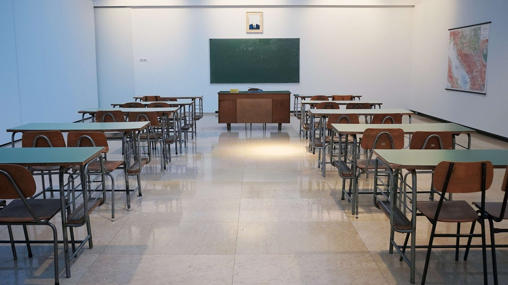

R.I.M.S
ReInventing Myself
"Jesus eloquently affirmed from the cross a higher law. He knew that the old eye for an eye philosophy would leave everyone blind.He did not seek to overcome evil with evil,He ovecame evil with good.Although crucified by hate, he responded with agressive LOVE!" MLK Jr.
Our Services
At R.I.M.S we offer a multitude of resources and a safe enviornment. This includes Alcoholics Anonymous, Narcartics Anoymous, Christian Counseling, Yoga/meditation, out reach programs with trauma informed specialists, G.E.D classes and gun violence prevention.
yoga/meditation
Daily yoga and meditation classes are available Mon-Sat at 11 am and 5pm with a trained instructor.We offer "somatic based yoga" which can promote physical healing, pain reduction through mind and body connection, movement, and touch.It focuses on your targeted stored tension, trauma and joy in the body. We also practice grounding and imagery meditation.
Gun Violence Prevention
We offer a gun violence survivors group on Tues. at 2pm and Thurs. at 6pm. This will be a closed group where there will be a max of 15-20 people who can sign up and register for 8 weeks.Here we will have a facilitator who is an actual survivor. Memebers will have a safe space in the circle to share their experiences and support one another.
"Early childhood adversities foster vulnerability to subsequent adulthood behavioral health issues through disruption of the stress response system, with reduced social support which ultimately impacts brain development learning, and behavior. In addition to biological consequences repeated stress exposures and functing dysregulation increase risk of a range of problematic conditions such as low socioeconomic status, stressful relationships and contexts that undermine adoptive capacities."1
Resources

Trauma Awareness
We offer a trauma informed class twice a week, Wed.from 2pm-3pm and on Fri.from 10am-11am where an expert on trauma will be open to discuss any concerns or questions you may have. If you need further advice he/she can direct you to a specialist or a mental health counselor.
Christian Counseling
Spiritual direction is available 6 days a week from 3pm-4pm with a pastor. We are also connected to our local Baptist Church and ministry if you are interested.

Mission Statement
This non-profit organization aims to foster a safe and healthy enviorment for young adults aged 18-25 who are at high risk for addiction, incarceration, gun violence, mental health issues and trauma. By offering a healing centered community, R.I.M.S will support young adults in their search for a stable and fulfilling future.
More
R.I.M.S is inspired by the personal experience of a real life tragic event where my son, 17 at the time fell victim to gun violence and nearly died. As a result of his upbringing, living with his grandparents who struggled with addiction and domestic violence as well as having an incarcearted parent he was easily influenced and found comfort on the streets. Its possible if he had access to a safer enviornment with resources and a more positive atmosphere maybe this violent act could have been prevented?
Education
G.E.D classes are available 6 days a week Mon-Sat starting at 8am for 2 hours a day with a bilingual teacher. The class holds 12-15 students, free Wi-Fi connection, and a computer lab. Tutors are also on site.
N/A Meetings
Narcartics Anoymous is an open meeting that's available 6 days a week twice a day at 10am and at 7pm for those who are struggling with substance abuse. Here you will meet common people who share the same problem and are looking for a life of sobriety. This is a sacred space where you can feel safe and comfortable. We also invite you to connect with a sponsor who will lead you through the 12 steps.
"Black and Latinx people make up less than 20% of the population in Massachusetts, yet acoount for nearly 80% of gun violence homicide victims. Black children are 10x more likely to be killed by a gun than white children, and gun violence is the cause of death for black children in the U.S."3
"One of the most effective ways to reduce the trauma of gun violence is to adequately fund the organizations who are doing the day-to-day outreach and violence interruption work."4
Our Staff
HI-Set/GED Teacher
Joshua Smith
He is our full-time teacher at R.I.M.S and has been a part of our team for a few years.He has experience working with underprivileged young adults who are at a disadvantage and struggle with their education.
See ProfileYoga Instructor
Natasha Campbell
She is a well certified yogi and has a lot of experience working with a younger crowd.She is very patient, kind, with an open mind and meets you where you are.Natasha has been working at R.I.M.S for a year.
See ProfilePastor
Ester Hill
Ms. Hill has been an ordained minister for 15 years and is well qualified to work at R.I.M.S She enjoys counseling those in need of spiritual direction especially in difficult times.Ester has been a part of our community since the beginning.
See ProfileWhere To Find Us
R.I.M.S is located in Boston.
1545 Tremont St.
Roxbury, MA 02120
www.reinenventingmyself.org
(617)555-555